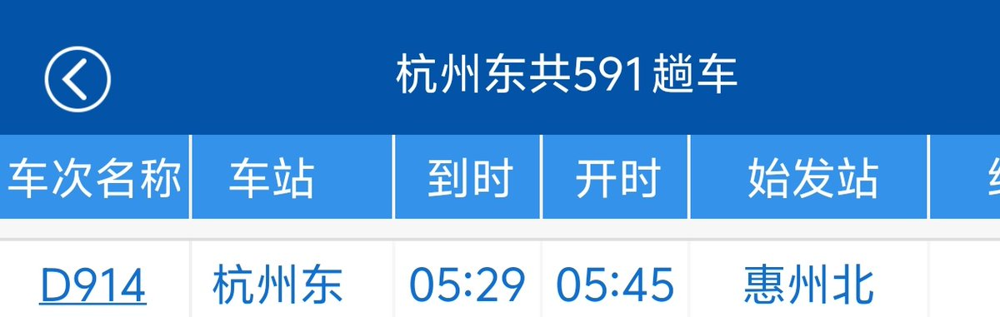
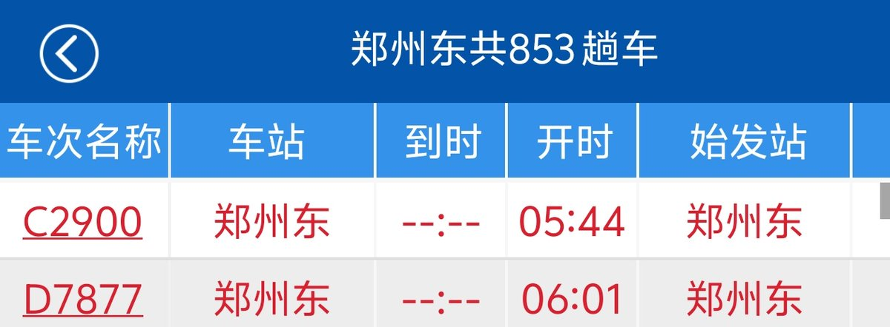
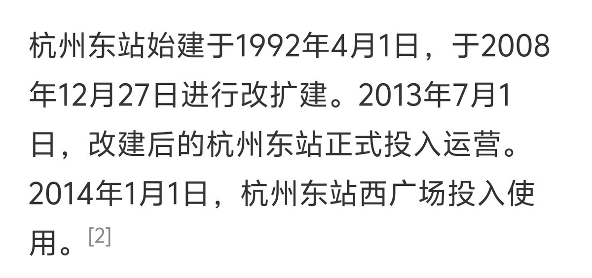
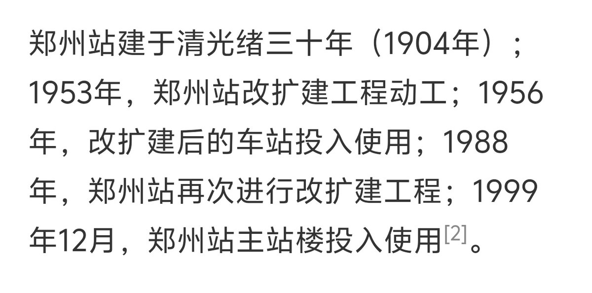

RedFox（2代目）🇲🇴🇭🇰
@FoxRed695449
真給我笑死了，本身就是懶政的問題就是死活要找理由不承認，順便岔開話題，也不知道這裡的客流對比和原話題有什麼關系
這麼喜歡維護統治階級我看你也不像即得利益者啊？
你河南要上一本線的大學我考ABB就能申，也沒見得我給統治階級辯解啊




奇诺_Kino
@Qinuo_Kino
你都杭州东了我是不是得把郑州东拿出来呀 https://t.co/9QFAWd8xIF https://t.co/MNtWlqSDn7